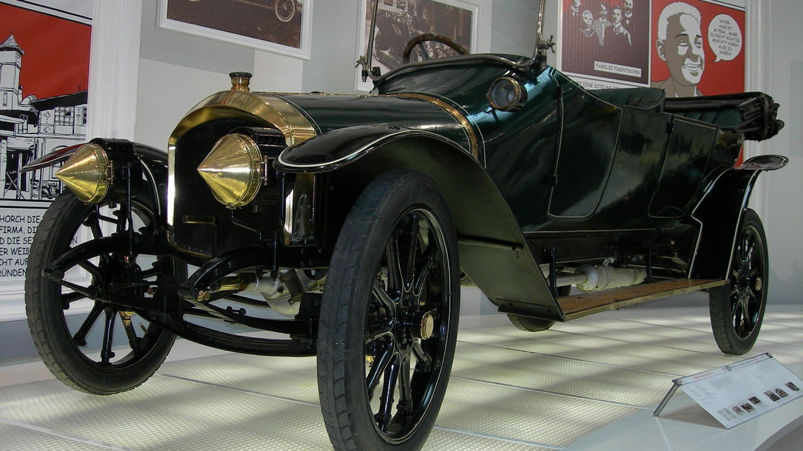
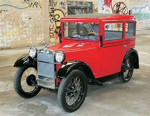
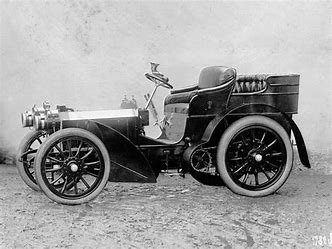
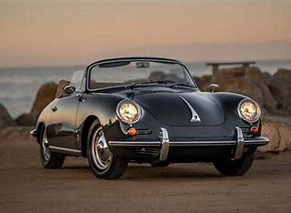
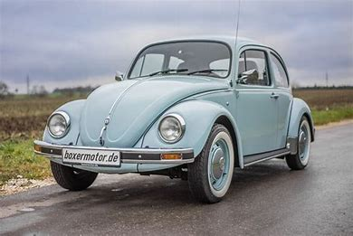
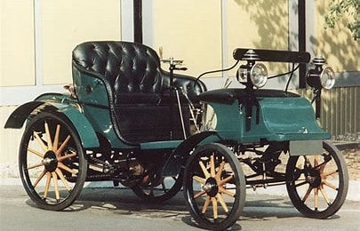
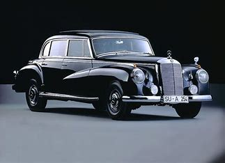
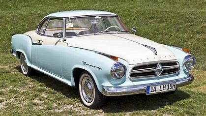

Die fünf Ikonen der Automobilgeschichte
Deutschland hat mit seinen Automarken weltweite Standards für Design, Leistung und Innovation gesetzt. Hier sind die beeindruckenden Geschichten der fünf größten Marken:
Audi
Audi wurde 1909 gegründet. Das älteste Modell, der Audi Type A, war eines der ersten Automobile, das von Audi unter dem Markennamen produziert wurde und setzte Maßstäbe für die spätere Entwicklung.

BMW
BMW wurde 1916 gegründet, und das erste Fahrzeug, der BMW 3/15, brachte das Unternehmen in den Automobilmarkt. Der 3/15 war das erste Serienfahrzeug von BMW und ein Meilenstein in der Geschichte der Marke.
Mercedes-Benz
Mercedes-Benz wurde 1886 gegründet. Das erste Modell, das Mercedes 35 PS, gilt als das erste echte Automobil der Marke und setzte neue Maßstäbe für die Automobilindustrie.
Porsche
Porsche wurde 1931 gegründet, und das erste Modell, der Porsche 356, war der Beginn der legendären Porsche-Serie und legte den Grundstein für die Erfolgsgeschichte der Marke.
Volkswagen
Volkswagen wurde 1937 gegründet und das erste Modell, der VW Käfer, wurde zu einem der bekanntesten und meistverkauften Autos der Welt, das die Geschichte der Automobilindustrie maßgeblich beeinflusste.
Opel
Opel wurde 1862 gegründet und begann als Hersteller von Nähmaschinen. Das erste Automobil, der Opel Patent-Motorwagen System Lutzmann, wurde 1899 produziert und ebnete den Weg für die Marke in der Automobilindustrie.
Maybach
Maybach wurde 1909 gegründet und etablierte sich als Hersteller von Luxusfahrzeugen. Der Maybach W3, eingeführt 1921, war eines der ersten Luxusautos mit serienmäßigem Getriebe.
Borgward
Borgward, 1924 gegründet, wurde mit Modellen wie der Borgward Isabella bekannt, die in den 1950er-Jahren als Design-Ikone galt.
